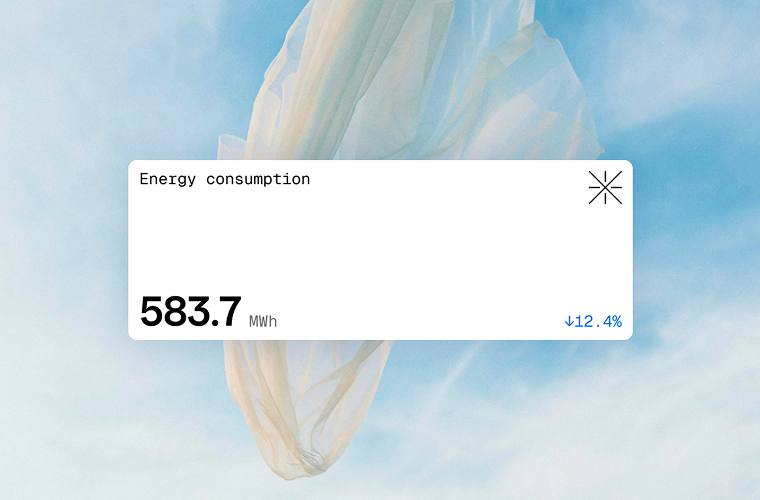

Sustainability insights,
built for business
Track impact, reduce emissions, and
accelerate progress—with clarity and
confidence.

Everything you need to measure, model, and act on sustainability

Track
001Emissions, energy, and waste across your value chain
Model
002Forecast performance and goal alignment
Report
003Generate ESG disclosures, automate frameworks
Act
004Surface insights and operational next steps
Built for clarity
Designed for action
Clarity drives action
We believe better decisions start with better data—measured, visible, and trusted.